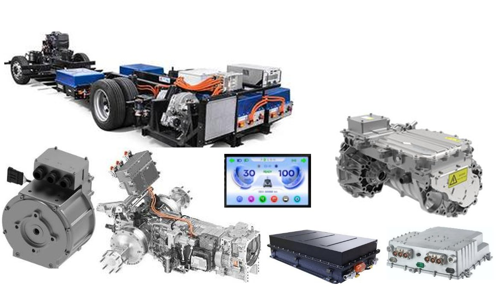

ECOES електрическа конверсия
ECOES JV предлага конверсия на нови и употребявани дизелови камиони, автобуси и друга мобилна техника към електрическо задвижване.
Вземете оферта за електрическа конверсия- Електрическа конверсия
- Авариен генераторен или батериен модул за движение без захранване от основните батерии

1. Какво е ECOES електрическа конверсия?
ECOES електрическата конверсия е сложен инженерен процес, който включва замяна на дизеловия двигател с електродвигател PMSM с течно охлаждане в комбинация с автоматична скоростна кутия, както и модификация на кормилната, спирачната, електрическата, хидравличната и климатичната система, трансмисията, вала за отбор на мощност (PTO) и всички други системи, свързани с функционалността и безопасността на превозното средство.
Процесът на ECOES електрическа конверсия на нови транспортни средства и друга техника не включва производство на нови машини от нулата. Вместо това се използват нови или употребявани, серийно произвеждани машини с дизелов двигател — доказали своята надеждност и ефективност в реална експлоатация — и дизеловите им двигатели се заменят с електрически.
2. Авариен модул за движение без захранване от основните батерии
Всяка мобилна машина, преминала ECOES електрическа конверсия, може по избор да бъде оборудвана с авариен модул за движение без захранване от основните батерии. Има два вида аварийни модули: генераторен и батериен.
- Аварийният генераторен модул се състои от специално проектиран генератор 400V AC, който чрез софтуер и зарядно устройство захранва батериите на превозното средство, за да осигури аварийна работа и придвижване до зарядна станция.
- Аварийният батериен модул се състои от отделна батерия, която не е свързана с основния батериен пакет, задвижващ електрическото превозно средство (например камион, автобус или друго). Когато енергията в основния батериен пакет се изчерпи, водачът превключва превозното средство на резервната батерия, която осигурява достатъчен пробег до зарядна станция.
Аварийният модул за движение, който работи независимо от основните батерии, решава най-сериозния проблем пред електрическите камиони:
- Какво става, когато основната батерия се изтощи?
- Електрическите камиони ECOES продължават да се движат!
3. Предимства на ECOES електрическата конверсия
3.1. Инвестиционни предимства:
- Цените на ECOES електрическата конверсия на нови европейски дизелови камиони в електрически са с 30%–40% по-ниски от тези на електрическите им аналози.
-
ECOES електрическата конверсия на съществуващи употребявани камиони удължава експлоатационния живот на превозното средство с още 15–20 години на цена с 50%–60% по-ниска от тази на нов, сравним електрически камион.
Камионите, нови или употребявани, преминали ECOES електрическа конверсия, имат стандартна двугодишна гаранция с възможност за удължаване.
3.2. Финансови предимства при експлоатация:
- Разходите за зареждане с електроенергия са приблизително 3–3,5 пъти (300–350%) по-ниски от разходите за дизел. Според различни международни проучвания около 20–30% от дизеловото гориво се краде. Премахването на кражбите намалява реалните разходи за гориво приблизително четирикратно (400%).
- Разходите за поддръжка са пренебрежимо малки, тъй като не е необходимо да се сменя или долива двигателно масло, антифриз или AdBlue. Масленият, горивният и въздушният филтър, акумулаторите, ремъците и дисковете на съединителя не се нуждаят от смяна, а износването на спирачните накладки е намалено. Няма проблеми със запушени DPF филтри — чиято подмяна струва над 3 000 EUR — и няма разходи за задължително планово обслужване или проблеми с изгорелите газове при техническите прегледи.
- Няма текущи и основни ремонти на дизеловите двигатели. След 10–15 години интензивна двусменна експлоатация разходите за текуща поддръжка и основни ремонти на дизеловите двигатели достигат много значителни суми.
- Пълно или частично освобождаване от данъци, намалени пътни такси и други облекчения в зависимост от разпоредбите на всяка отделна държава.
3.3. Технически предимства при експлоатация:
- Всеки нов или употребяван електрически камион ECOES има автоматична скоростна кутия, която значително намалява електрическото и топлинното натоварване на двигателя PMSM. Това увеличава пробега и прави управлението изключително удобно за водача в натоварените градски условия с често спиране и потегляне.
- Камионите ECOES са оборудвани със зарядно устройство, което позволява програмирани цикли на зареждане. Като опция се предлага соларна система с мощност най-малко 100 kWp, която осигурява безплатна електроенергия за камиона ECOES, както и за други бизнес и битови нужди.
Защо ECOES конверсия?
Защото бъдещето принадлежи на електрическите превозни средства. И тъй като това е бъдещето, основният въпрос е не дали, а кога ще започнем да ги използваме. Ако не направим прехода към електрически превозни средства доброволно и по убеждение, ще го направим по принуда. Тази принуда произтича от политиката на „тоягата и моркова“, провеждана от различни международни организации и национални правителства.
Тоягата за дизела – Все по-строгите екологични стандарти — като настоящия Евро 6 и предстоящия Евро 7 — водят до по-строги изисквания за емисиите и по-високи цени на мобилната дизелова техника. Наблюдава се и непрекъснато покачване на акцизите и на крайните цени на дребно на дизела и бензина, които се влияят от различни пазарни фактори, картелни зависимости и регионални военни конфликти.
Морковът за електрическите – За покупката и използването на електрически превозни средства са налични различни форми на финансови стимули по екологични, „зелени“ и други програми. Превозните средства могат да се зареждат у дома, във фирмата или във фермата по намалените тарифи за електроенергия извън пиковите часове. По пътната мрежа се изграждат все по-големи и удобни мрежи от зарядни станции. Цените на електроенергията са много по-стабилни от цените на дизела, тъй като растат много по-бавно и не зависят от пазарни картелни фактори или регионални военни конфликти. Зареждането може да бъде дори безплатно, ако се използват собствени соларни системи за зареждане.
При тези условия решението за преминаване от дизел и бензин към електрическо задвижване винаги включва сравнение на трите вида превозни средства: дизелови, бензинови и електрически. Дизеловите и бензиновите превозни средства работят добре, но експлоатацията им става все по-скъпа. Електрическите камиони са много по-евтини за експлоатация, но имат висока покупна цена и спират, когато батерията им се изтощи.
Свързващото звено в този преход от дизел и бензин към електрическо задвижване е ECOES конверсията. Тя позволява преминаването от двигател с вътрешно горене към електрическо задвижване, като същевременно решава основното предизвикателство пред електрическите превозни средства: запазване на мобилността в авариен режим, след като зарядът на батерията се изчерпи.
ОСНОВНАТА ЦЕЛ НА ECOES JV Е ДА ПРЕДЛАГА ЕЛЕКТРИЧЕСКИ ПРЕВОЗНИ СРЕДСТВА НА ЦЕНАТА НА ДИЗЕЛОВИТЕ ИМ АНАЛОЗИ ЧРЕЗ ПРОЦЕСА НА ECOES КОНВЕРСИЯ.
Вземете оферта за електрическа конверсия